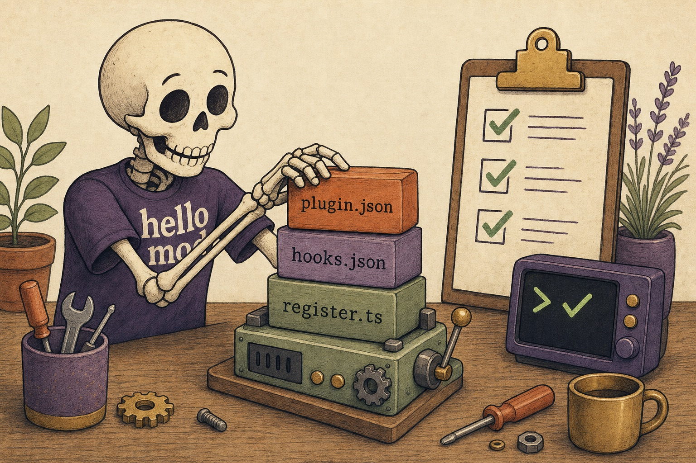

Build A facilitated tutorial for Claude Code
Build your own mod skeleton
Reading about hook chains only goes so far. The Mod Skeleton 101 is a tutorial you run inside Claude Code. Claude facilitates: it teaches one idea, makes one small change, asks you to predict the result, runs the check for real, commits, and asks you a question. You end with a small mod you built and tested yourself, and a git history that tells the story one layer per commit.

What you'll build
skeleton-guard is the smallest mod with the real shape: three files, a test, a guard that fails closed, state that survives /clear, and an install line someone else can use. By the end it:
- counts Claude's tool calls and shows the count on the spinner and in a band above the prompt
- answers its own
/skeletoncommand without starting a Claude turn - holds
rm -rf, force pushes andgit reset --hard, and still holds them when the guard itself breaks - refuses
@-mentioned secret files, which notool.callguard ever sees - keeps per-session counts in
$.stateand all-time counts in$.store - has tests, type-checks against your own build, and installs from a marketplace
On the way you watch three things go wrong on purpose, each in a test: a guard that fails open when it throws, an @-mentioned .env slipping past a tool.call guard, and a misspelling that claude plugin validate passes and the compiler catches.
Who it's for
You drive Claude Code and want to change it
You've used skills, settings hooks or MCP servers and want to know what a mod adds, and how to write one you'd trust in your own sessions. Claude reads each snippet aloud in plain words before writing it.
You write TypeScript and want the model right
You'll move fast through the syntax and spend the time on the chain: who runs first, which hooks fail open, what each kind of state outlives, and what the test kit stands in for.
How to start
git clone https://github.com/RobGruhl/claude-mod-learnings
cd claude-mod-learnings/tutorial
claudeThe folder's own CLAUDE.md turns Claude into the facilitator: it greets you, checks your setup, and offers to start, resume, or run a 201 direction. Your mod is built in tutorial/my-mod/ as its own git repository, and the tutorial files stay untouched. If Claude doesn't start on its own, say: "Walk me through the Mod Skeleton 101 one module at a time, following the Facilitator Contract in 101-mod-skeleton.md."
Coming back later? Open the folder again and say: "We're partway through the Mod Skeleton 101. Read the git log in my-mod and continue from the next module." Each module is one commit, so Claude can always find your place.
You'll need
- Claude Code 2.1.287 or later (mods shipped then; the tutorial was checked on 2.1.296) and git
- A second terminal window. Some checks only show in a live session that loads your mod: the status line, the spinner, the band,
/plugin. Claude can't see that screen, so you tell it what you see. - For Module 11, Node.js or Bun to run TypeScript's compiler, with a skip path
- Three to four hours across a few sittings. Facilitation uses your Claude Code usage; the mod itself calls no model.
The modules
| # | Module | You walk away knowing |
|---|---|---|
| 0 | Orient | What a mod can reach that a skill can't, and three ways to turn mods off |
| 0.5 | Initialize version control | Why the typings Claude Code writes beside a mod stay out of git |
| 1 | Three files: a tool counter | plugin.json, hooks.json, register(on) and the ($, e, next) hook |
| 2 | Read it like a reviewer | validate's hooks: and calls: lines, and the reserved names |
| 3 | The first test | The kit sits beneath your mod, so a test answers every event and $ call |
| 4 | Rewrite what Claude Code draws | Rewrite with next({ ...e }), and why that's politer than replacing |
| 5 | Answer for yourself: a slash command | A command that runs your code with no Claude turn |
| 6 | A guard on tool.call | { deny }, and that the deny reason is a prompt to the model |
| 7 | Make the guard fail closed | A guard that throws is skipped and the call runs, unless it has a .catch |
| 8 | The second door | @-mentioned files are read with no tool call; guard prompt.mention too |
| 9 | State that redraws | $.state, the PluginState contract, and a band above the prompt |
| 10 | State that lasts | $.store as the source of truth, and the /clear trap |
| 11 | Type-check against your build | What the compiler catches that validate doesn't |
| 12 | README and CLAUDE.md | An install line for people, and rules for the next agent |
| 13 | Package and install | The mod's folder as its own marketplace, and what a version number does |
| 14 | Ship one change | Test first, every check, a version bump, and a short review |
How a module feels
- Learn the idea in a few plain sentences.
- Make one small change. Claude proposes and writes it; you see the diff.
- Predict. "Will the guard hold this call when it throws?" "Will
validatecatch the misspelling?" Claude stops and waits for your answer. - Run the check for real (
claude plugin validate,claude plugin test, or what you see in your live session) and compare it with your prediction. - Commit as
module N: title. - Reflect. Answer a question in your own words before Claude shows the expected answer.
The rules Claude follows
- One module at a time, and after every prediction or reflection question it ends its message and waits.
- Every check runs for real. Checks in your live session are yours to report; Claude records what you say and never fills it in.
- No new reach without saying so. A mod runs with your permissions, so Claude never adds a network call, a process or a file write outside your mod without asking.
- The declarations win. The mods API is early access; where the script and the types your build wrote disagree, Claude says so and follows the types.
- After about three failed attempts at the same check, stop and explain instead of thrashing.
Every snippet in the script was run on Claude Code 2.1.296: validate and test passed at each stage, and each failure the script predicts was seen. The finished mod is in tutorial/.reference/skeleton-guard, and the full script is tutorial/101-mod-skeleton.md.
After the 101
The 201 offers seven directions, each run the same way:
A pane with buttons
A panel opened from /skeleton, buttons that raise ui.press, and a mount test on two surfaces.
A real policy
An allow-list on resolved paths with $.fs.stat, plus a tool.check hook. Stronger than any list of spellings.
Hold and ask
Ask the person with $.ui.ask instead of denying, and test the timeout that would otherwise let the call through.
A decision tier
A model judges only what the patterns can't settle, with a fallback to the person on timeout. See Mods meet the cascade.
Options
userConfig for extra patterns, tested with test(name, { options }, body).
Publish with CI
A public repo, the install line tested from a clean session, and CI running validate --strict and test.
A tool for Claude
$.tool.register, served by the mod's own tool.call hook.
Where the format comes from
The facilitation design comes from the Walking Skeleton tutorial: one module at a time, a prediction before every check, every check run for real, one commit per module, a circuit breaker, and resuming from the git log. That tutorial builds a production-shaped web app; this one applies the same method to a mod. The sister site's Decision Skeleton applies it to a decision cascade.